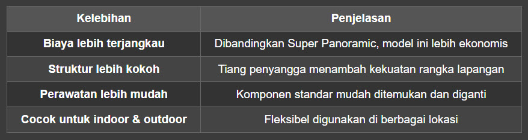
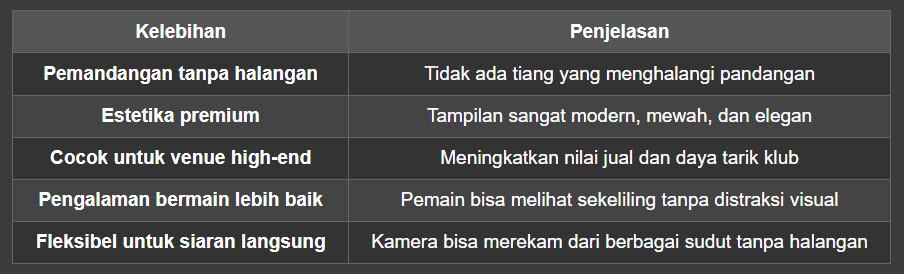
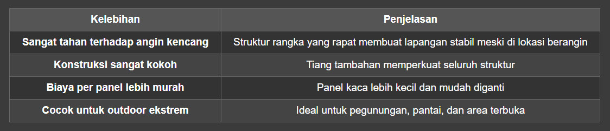
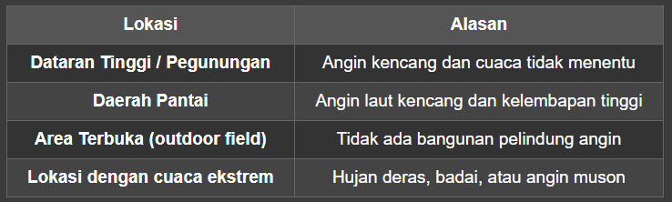
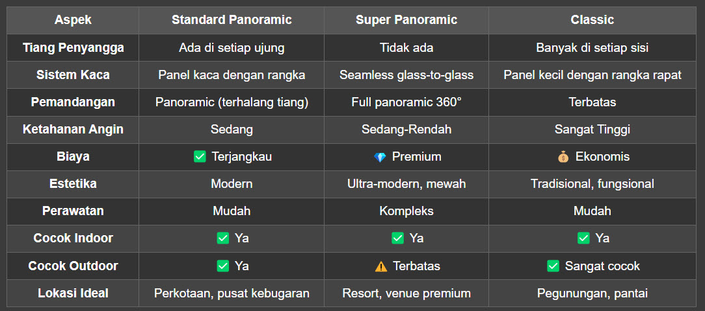
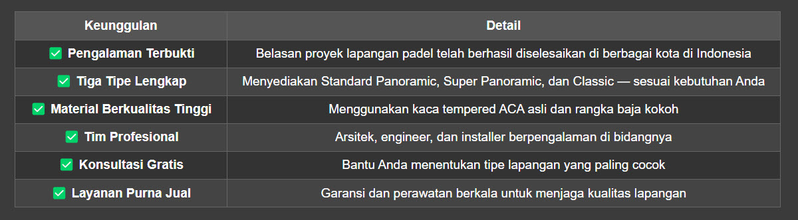

Standard Panoramic, Super Panoramic, dan Classic — Mana yang Paling Cocok untuk Anda?
📌 Pendahuluan
Olahraga padel (atau paddle tennis) kini sedang menjadi fenomena di Indonesia. Dalam kurun waktu beberapa tahun terakhir, jumlah klub dan lapangan padel tumbuh pesat — data dari Databoks menunjukkan pertumbuhan signifikan hingga tahun 2025. Surabaya, Jakarta, Alam Sutera, hingga berbagai kota besar lainnya mulai berlombalomba membangun lapangan padel berkualitas.
Namun, tahukah Anda bahwa tidak semua lapangan padel itu sama?
Dalam dunia konstruksi lapangan padel, ada beberapa tipe model lapangan yang dirancang untuk kebutuhan dan kondisi lingkungan yang berbeda. Mulai dari yang paling umum digunakan di Indonesia, hingga yang dirancang khusus untuk area outdoor dengan angin kencang seperti pegunungan dan pantai.
Artikel ini akan mengupas tuntas tiga tipe utama lapangan padel, yaitu:
- Lapangan Padel Standard Panoramic
- Lapangan Padel Super Panoramic
- Lapangan Padel Classic
Yuk, kita bahas satu per satu secara detail!
🏟️ 1. Lapangan Padel Standard Panoramic — Si Paling Populer di Indonesia
🔍 Apa Itu Lapangan Padel Standard Panoramic?
Lapangan Padel Standard Panoramic adalah tipe lapangan padel yang paling sering dijumpai di berbagai klub dan venue padel di Indonesia. Model ini menjadi pilihan utama karena keseimbangan antara kualitas bermain, estetika, dan biaya konstruksi.
🧱 Ciri Khas & Karakteristik Utama
Memiliki tiang penyangga di setiap ujung lapangan. Tiangtiang ini berfungsi sebagai penopang utama struktur kaca dan pagar lapangan.
Menggunakan panel kaca tempered (ACA tempered) yang dipasang di sekeliling lapangan untuk memberikan visibilitas maksimal.
Desain panoramic tetap terasa karena kaca yang luas, meskipun ada tiang penyangga di beberapa titik.
✅ Kelebihan Lapangan Padel Standard Panoramic

❌ Kekurangan
Tiang penyangga di beberapa sudut bisa sedikit mengganggu pandangan pemain atau penonton.
Tampilan visual tidak sebersih model Super Panoramic.
📍 Cocok Untuk
Klub padel indoor di perkotaan
Venue komersial dengan budget menengah
Lapangan latihan dan pertandingan amatir hingga semiprofesional
🏟️ 2. Lapangan Padel Super Panoramic — Puncak Kemewahan Visual & Teknologi
🔍 Apa Itu Lapangan Padel Super Panoramic?
Lapangan Padel Super Panoramic adalah generasi terbaru dari desain lapangan padel yang menghilangkan semua hambatan visual. Model ini dirancang untuk memberikan pengalaman bermain dan menonton yang paling imersif.
🧱 Ciri Khas & Karakteristik Utama
Tidak memiliki tiang penyangga sama sekali di setiap ujung lapangan. Semua panel kaca disatukan secara seamless.
Seamless glasstoglass system — panel kaca tempered disambung langsung tanpa rangka tiang di sudut, menciptakan permukaan kaca yang mulus tanpa putus.
Pemandangan 360° full panoramic — pemain dan penonton bisa melihat ke luar lapangan tanpa ada halangan tiang.
Menggunakan teknologi framing minimalis pada bagian atas dan bawah kaca untuk menjaga kekuatan struktural.
✅ Kelebihan Lapangan Padel Super Panoramic

❌ Kekurangan
Biaya konstruksi lebih mahal karena teknologi seamless glass dan rangka khusus.
Perawatan lebih kompleks — jika satu panel kaca rusak, penggantian memerlukan penanganan khusus.
> 💡 Tips: Untuk mengoptimalkan kelebihan Super Panoramic, pasang lapangan di lokasi dengan pemandangan indah seperti tepi pantai, area hijau, atau rooftop dengan city view.
📍 Cocok Untuk
Venue premium dan eksklusif
Klub padel di lokasi wisata (resort, beach club, villa)
Arena pertandingan profesional yang disiarkan langsung
Klub yang ingin membangun brand image mewah
🏟️ 3. Lapangan Padel Classic — Tangguh di Medan Ekstrem
🔍 Apa Itu Lapangan Padel Classic?
Lapangan Padel Classic adalah tipe lapangan padel yang mengadopsi desain era awal olahraga ini, dengan banyak tiang penyangga di setiap sudut dan sisi lapangan. Meskipun tampilannya lebih tradisional, tipe ini tetap menjadi pilihan utama untuk kondisi lingkungan tertentu.
🧱 Ciri Khas & Karakteristik Utama
Memiliki banyak tiang penyangga di setiap ujung dan sisi lapangan — lebih banyak dari model Standard Panoramic.
Struktur rangka lebih rapat dan kokoh untuk menahan tekanan angin dan beban eksternal.
Kaca tempered dipasang dalam panelpanel yang lebih kecil dengan rangka yang lebih sering, sehingga lebih tahan terhadap goncangan.
✅ Kelebihan Lapangan Padel Classic

❌ Kekurangan
Banyak tiang mengganggu pandangan pemain dan penonton.
Estetika kurang modern dibandingkan Standard Panoramic atau Super Panoramic.
Pengalaman bermain sedikit terganggu karena terhalang tiang saat rally di sudut lapangan.
🌬️ Lokasi Terbaik untuk Lapangan Padel Classic

⚖️ Perbandingan Lengkap Tiga Tipe Lapangan Padel

🎯 Bagaimana Cara Memilih Tipe Lapangan Padel yang Tepat?
Memilih tipe lapangan padel bukan sekadar soal selera — ada faktor teknis dan lingkungan yang harus dipertimbangkan. Berikut panduan praktisnya:
📋 Pertimbangan Utama:
1. Lokasi Geografis
Di perkotaan dengan gedung tinggi sebagai penahan angin? → Standard Panoramic sudah cukup.
Di tepi pantai atau pegunungan dengan angin kencang? → Classic adalah pilihan paling aman.
Di resort eksklusif dengan pemandangan laut? → Super Panoramic adalah jawabannya.
2. Anggaran
Budget terbatas namun ingin kualitas standar? → Standard Panoramic
Budget menengah dan butuh ketahanan ekstra? → Classic
Budget besar dan ingin tampilan premium? → Super Panoramic
3. Target Pengguna
Pemain umum & komunitas → Standard Panoramic
Pemain profesional & turnamen → Super Panoramic
Area outdoor ekstrem → Classic
4. Estetika & Brand Image
Ingin tampil modern dan kekinian? Pilih Standard Panoramic atau Super Panoramic.
Fokus pada fungsi dan ketahanan? Classic tidak akan mengecewakan.
🏆 Padelkultura: Penyedia Lapangan Padel Terbaik di Indonesia
Setelah memahami ketiga tipe lapangan padel di atas, pertanyaan selanjutnya adalah: Siapa yang bisa mewujudkan lapangan padel impian Anda?
Jawabannya: Padelkultura.
🌟 Mengapa Padelkultura?
Padelkultura adalah penyedia lapangan padel terbaik di Indonesia yang telah dipercaya oleh berbagai pihak untuk membangun lapangan padel berkualitas internasional. Dengan belasan portofolio yang tersebar di seluruh Indonesia, Padelkultura telah membuktikan diri sebagai market leader di industri ini.
✅ Keunggulan Padelkultura

📍 Portofolio Padelkultura
Padelkultura telah membangun berbagai tipe lapangan padel di Indonesia, mulai dari venue indoor di pusat kota, lapangan outdoor di area pegunungan, hingga resort mewah di pesisir pantai. Setiap proyek dikerjakan dengan standar tinggi dan disesuaikan dengan kondisi lingkungan masing-masing.
💬 Testimoni Singkat
> "Kami memilih Padelkultura karena mereka benar-benar memahami kebutuhan kami. Untuk lapangan di area pegunungan, mereka merekomendasikan tipe Classic yang ternyata sangat tahan terhadap angin. Hasilnya luar biasa!"
> — Klien Padelkultura di daerah pegunungan Jawa Barat
> "Super Panoramic dari Padelkultura benar-benar mengubah wajah klub kami. Pemandangan 360° tanpa tiang membuat setiap pertandingan terasa seperti di lapangan internasional."
> — Klien Padelkultura di Jakarta
🔮 Masa Depan Lapangan Padel di Indonesia
Olahraga padel terus berkembang pesat di Indonesia. Dengan semakin banyaknya pemain, klub, dan turnamen, permintaan akan lapangan padel berkualitas juga semakin tinggi.
Tren yang perlu diperhatikan:
1. Super Panoramic diprediksi akan menjadi standar baru untuk venue premium dan turnamen profesional.
2. Standard Panoramic tetap menjadi pilihan utama untuk klub komersial dan fasilitas umum karena keseimbangan harga dan kualitas.
3. Classic tetap relevan untuk lokasi dengan tantangan lingkungan tinggi, terutama dengan perubahan iklim yang membuat cuaca semakin ekstrem.
Padelkultura selalu mengikuti perkembangan teknologi dan tren desain lapangan padel global, memastikan setiap lapangan yang dibangun adalah yang terbaik di kelasnya.
📝 Kesimpulan
Memilih tipe lapangan padel bukanlah keputusan yang bisa dianggap sepele. Setiap tipe — Standard Panoramic, Super Panoramic, dan Classic — memiliki kelebihan dan kekurangan masingmasing yang perlu disesuaikan dengan:
✅ Lokasi dan kondisi lingkungan
✅ Anggaran yang tersedia
✅ Target pengguna
✅ Kebutuhan estetika dan fungsional
Dengan memahami perbedaan ketiganya, Anda bisa membuat keputusan yang tepat dan menghindari kesalahan yang bisa berakibat fatal — seperti memasang lapangan Super Panoramic di area pantai berangin, atau memasang Classic di venue premium yang mengutamakan estetika.
Dan untuk hasil terbaik, percayakan pembangunan lapangan padel Anda kepada ahlinya: Padelkultura.
📞 Hubungi Padelkultura Sekarang! 081217481860
Ingin membangun lapangan padel? Konsultasikan kebutuhan Anda dengan tim Padelkultura.
Kunjungi website resmi Padelkultura atau hubungi tim kami untuk:
✅ Konsultasi gratis penentuan tipe lapangan
✅ Survei lokasi
✅ Gambar desain dan RAB
✅ Proses instalasi profesional
Padelkultura — Penyedia Lapangan Padel Terbaik di Indonesia
Belasan portofolio tersebar di seluruh Nusantara. Bukti nyata kualitas nomor satu.